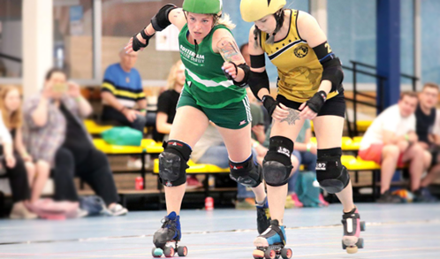

About the sport
Rotterdam Roller Derby is run by the members of the league.
We have a Rotterdam mentality; roll up your sleeves, buckle down
and do not complain. That mentality has brought us to where we are now.
A league with attention for everyone! What does that mean? Anyone
who has a warm heart for roller derby is welcome to our league.
We support athletes as well as recreational players. We facilitate
the development of officials. Our vision is to be open to all experiences
and needs of our members. Therefore, we believe, above all, in the importance
of having fun together. Our official motto “Sterker door Strijd” and unofficial
“Sterker door Snacks” signify this as well

Community
Rofficials We’re always looking for skating and non-skating referees!
We need a lot of them during games. Are you interested? Contact us,
we can teach you everything you need to know! Volunteer If you want
to help make our events awesome, help organize games and fundraisers or
contribute with design and promotional ideas, get in touch! Gameday crew
Help make our games an amazing experience for everyone by photographing,
helping to run our merch store, serving at the ticket stand, or selling raffle
tickets. PR-team Help spread the message of roller derby to the Rotterdam area
and beyond! If you have great PR skills and a brain full of promotional ideas,
we need you! Financial Support: Friends of RRD Want to support roller derby in
Rotterdam? Then consider becoming our friend. As a Friend of RRD you pay a
fixed amount per month to get a discount on game day tickets and you a nice
welcome package. Interested? Send an email to vriendenvan.rrd@gmail.com.
Visit a game We’re always looking for new fans! Join us at a game to get to
know roller derby and our members. There are always announcers present who can
tell you exactly what is happening on the track, so don’t be afraid!